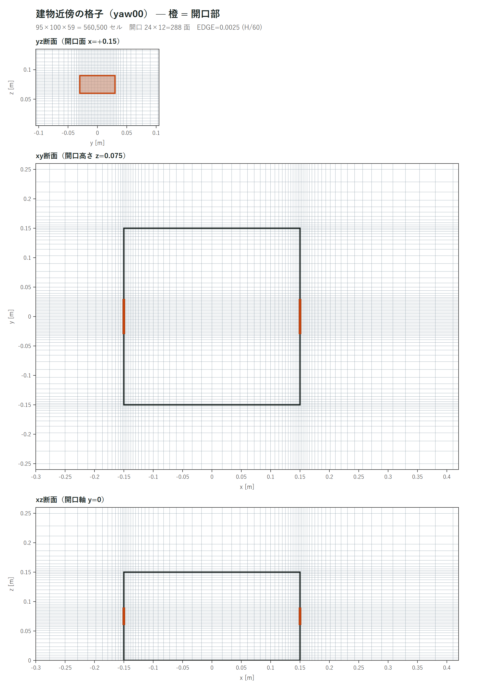
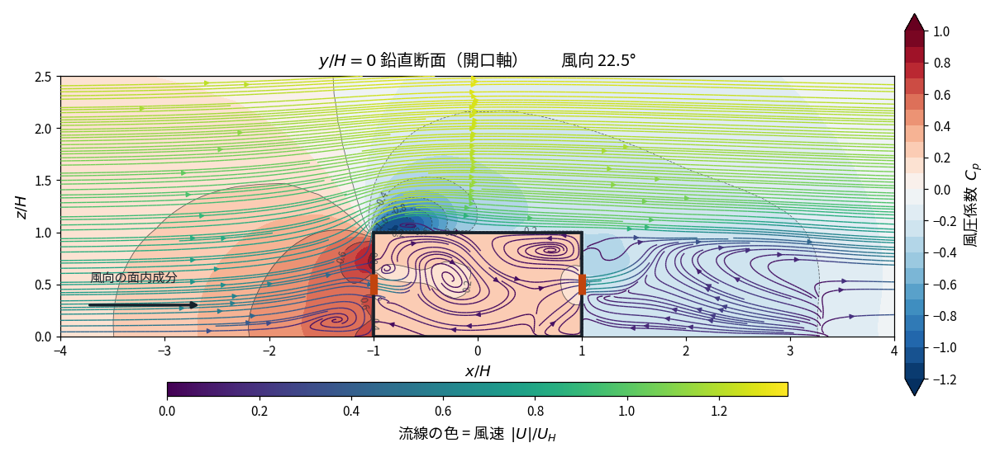
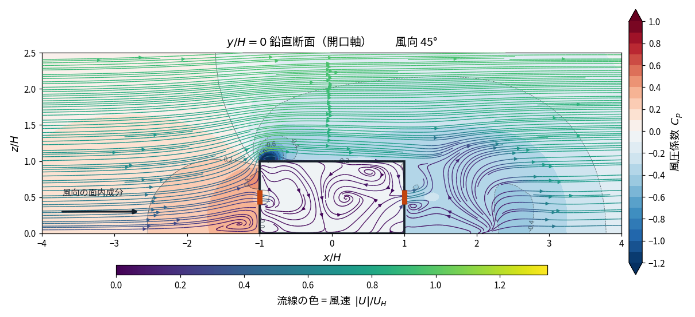
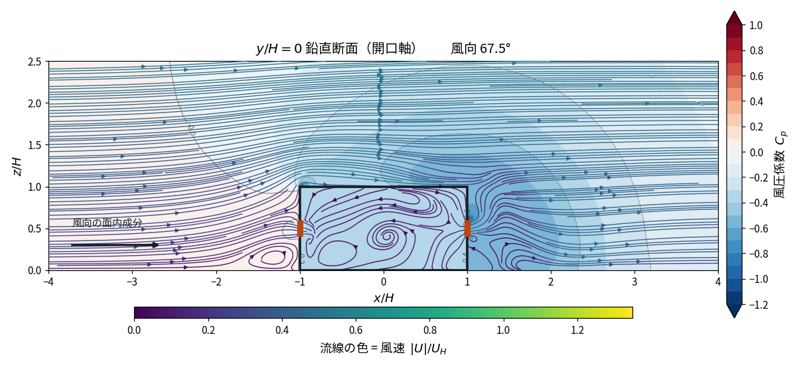
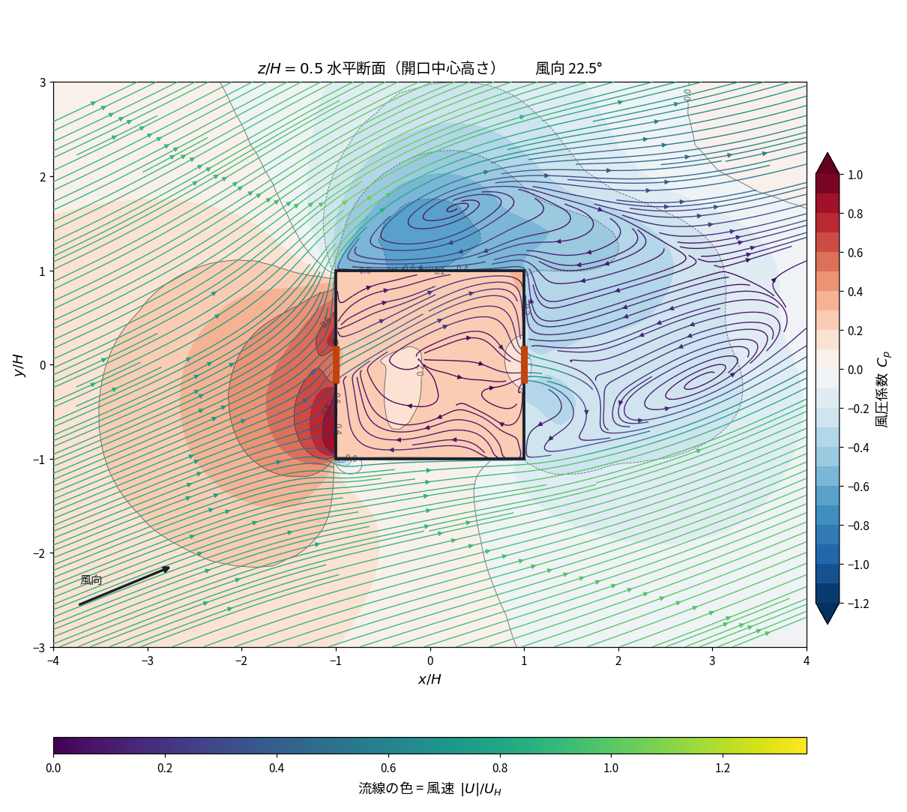
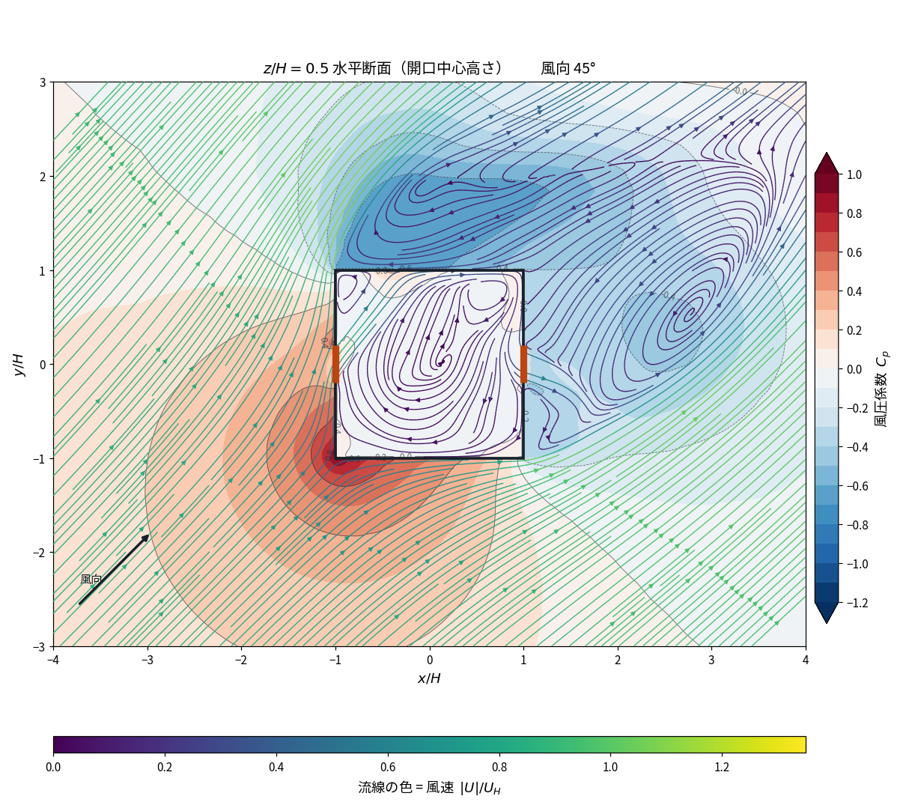
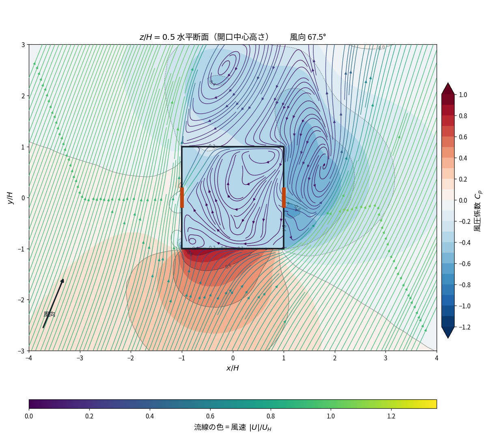

OpenFOAM による通風ベンチマークの検証
書籍 4.5 節の通風ベンチマークを OpenFOAM で解き、 その計算が妥当であることを確認した記録である。 反復収束（AIJ §7.1）、格子収束（GCI）、離散化の影響を順に切り分け、 流れ場の構造と開口部の流量係数を既知の値と照合した。 通風量の絶対値には実験との乖離が残るが、その原因を数値誤差から切り離して 特定できる状態まで整理している。
要旨
本解析の数値的な妥当性は確認できた。 反復収束は AIJ §7.1 を 4 風向で満たし（0° と 67.5° は全 22 監視量）、 格子収束は幾何相似な格子族で見かけの次数 1.607・GCI 1.5 〜 3.7%、 離散化スキームの寄与は 0.1 〜 0.4% である。 流れ場の構造は 4 風向にわたり単調に変化し、 開口部の流量係数は風下側で 4 風向とも 0.65 ± 0.015 と 薄板オリフィスの教科書値に一致した。 通風量に残る実験との乖離 −13 〜 −28% は、 これら数値誤差のいずれでも説明できない。 書籍自身の CFD（4 モデル）も実験から −5 〜 −30% 外れており、 本解析は既往の公表値と同じ精度帯にある。
以下、切り分けの過程を順に示す。 壁面格子を 2 倍に細分した結果、通風量 Q/(UHH²) は 3 風向とも −1.1 〜 −1.9% 変化した。既往解で風向によりばらついていた変化幅 （+2.2% / −4.4% / +0.03%）が狭い帯に揃った点は収束の傾向として整合的である。
一方、この局所細分の格子族では見かけの収束次数が 0.17 にとどまり、 解は漸近域に入らなかった。そこで格子生成器の長さスケールをすべて同じ倍率で スケールした幾何相似な格子族（560,500 / 174,048 / 66,528 セル、 細分比 1.48 / 1.38）を作り直したところ、見かけの次数は 1.607 となり 単調収束が得られた。残存する格子依存性は GCI で 1.5 〜 3.7% である。 実験との乖離 −14.4% とは明確に桁が異なり、 乖離を格子解像度で説明することはできないと確定した。
45° は既往の細分で +0.03% しか動かず収束したように見えていたが、本解析で −1.68% 動いた。 あの一致は偶然であり、収束の根拠ではなかったことが確定した。
実験値との乖離は −13 〜 −28% である。室内静圧を CFD から直接測って 2 つの開口の流量係数を分離したところ、 風下開口の α は 3 風向とも 0.65 〜 0.68 と薄板オリフィスの教科書値に一致し、 風上開口の α は 0.83（0°）から 0.65（45°）へ風向角とともに低下した。 室内 Cp の標準偏差は 0.011 〜 0.018 にとどまり、 オリフィスモデルの前提は満たされている。全圧の分布からは、 開口自体の損失は 0.01 〜 0.02 と小さく、損失の大半は開口下流の噴流散逸で 生じていることが確認された。
したがって 実験との乖離は開口部の流れではなく、建物まわりの圧力場に帰属する。 実測した α のもとで実験値を再現するには開口面の風圧係数差 ΔCp が 1.06 〜 1.22 必要であり、CFD の値（0.63 〜 0.82）はこれを 25 〜 49% 下回る。
この乖離が乱流モデルに起因するかを確かめるため、格子・境界条件を同一に保ったまま 標準 k-ε・1 次風上・SIMPLEC（市販ソフト Flow Designer の既定設定に相当）で解き直した。 ΔCp は予想に反して 6.4% 増加した一方、風上開口の α が 0.822 から 0.695 へ低下し、正味では通風量が 3.7% 減って実験との差は −14.4% から −17.5% へ広がった。 ΔCp と α は独立に調整できず、乱流モデルの変更は両者を逆向きに動かす。 なお比較ケースは 2,771 反復で残差 10⁻⁸ まで収束しており、 本解析の設定（20,000 反復で residualControl 未達）より 7 倍速い。 収束の速さと精度は別物である。
検証の全体像
CFD の妥当性確認は、方程式を正しく解けているか（verification）と 現実と合うか（validation）に分かれる。本報告の到達点は次のとおり。
| 区分 | 項目 | 結果 | 判定 | 節 |
|---|---|---|---|---|
| Verification — 数値的な正しさ | ||||
| 反復収束 | AIJ §7.1（22 監視量） | 0°・67.5° は 22/22、22.5°・45° は 21/22 | 達成 | 3 |
| 格子収束 | 幾何相似な 3 格子、Celik 手順 | p = 1.607、GCI 1.5 〜 3.7% | 達成 | 4.2 |
| 反復誤差と離散化誤差 | 分離 | 反復誤差は格子間差の 1/10 以下 | 達成 | 4.3 |
| 離散化スキーム | QUICK と 1 次風上の 2×2 比較 | 通風量への寄与 0.1 〜 0.4% | 評価済 | 6.4 |
| 計算領域・閉塞率 | AIJ 推奨を満たす／超える 2 領域 | 拡大しても ΔCp は上がらない | 除外 | 6.5 |
| 開口が風圧場に与える影響 | 密閉建物（中実）との比較 | 壁面 Cp が 0.18 低下 | 定量化 | 6.6 |
| Validation — 現実との対応 | ||||
| 流れ場の構造 | 前面渦・屋根剥離泡・後流 | 立方体の実験値と整合、4 風向で単調 | 整合 | 5 |
| 風下開口の流量係数 | 室内静圧の直接測定 | α = 0.65 ± 0.015（4 風向） | 教科書値と一致 | 6.2 |
| 風上開口の流量係数 | 同上 | 0.83（0°）→ 0.60（67.5°） | 物理的に妥当 | 6.2 |
| 通風量の絶対値 | 風洞実験との比較 | −13 〜 −28% | 乖離あり | 6 |
数値誤差はすべて乖離より 1 桁小さい。 反復誤差・格子誤差（1.5 〜 3.7%）・離散化スキーム（0.4% 以下）のいずれも、 実験との乖離 13 〜 28% を説明できない。 開口部の流れも実測・教科書値と整合している。 計算領域を AIJ 推奨を超える大きさへ広げても ΔCp は上がらず、 むしろ低下した（§6.5）。 消去法により、残る候補は「定常 RANS が後流の非定常性を扱えないこと」 のみとなった。 角柱の基底圧は渦放出によって決まるが、定常解析はこれを平均化して消すため、 基底負圧を系統的に過小評価することが知られている。 書籍自身の CFD 4 モデルも実験から −5 〜 −30% 外れており、 定常 RANS でこのベンチマークを解いた場合の一般的な精度帯である。
1. 目的
既往解（242,424 セル）は AIJ §7.1 による反復収束を満たす一方、格子収束は未確認であった。 とくに 22.5° では粗格子（167,040 セル）からの細分で通風量が −4.4% 動き、 これは統計的な 95% 信頼区間の 100 倍以上に相当した。答えが格子幅に依存している状態である。
本検証では建物壁面・屋根端・開口縁の目標セル厚さ δ を 0.005 m（H/30）から 0.0025 m（H/60）へ半減し、通風量の変化から格子依存性の残存量を定量化する。 実験値との −13 〜 −28% の乖離をモデル誤差・境界条件の問題として切り分けられる段階に 到達しているかを判断することが目的である。あわせて、実務で用いられる 自然換気の通風量式が同じ条件でどの程度の精度を持つかを検証する。
2. 解析条件
2.1 対象と領域
| 項目 | 無次元 | SI |
|---|---|---|
| 建物 幅 × 奥行 × 高さ | 2 × 2 × 1 | 0.30 × 0.30 × 0.15 m |
| 開口 幅 × 高さ（風上・風下の 2 面） | 0.4 × 0.2 | 0.06 × 0.03 m |
| 開口の中心高さ | 0.5 | 0.075 m |
| 領域 x | −6 〜 10 | −0.9 〜 1.5 m |
| 領域 y | ±6 | ±0.9 m |
| 領域 z | 0 〜 5 | 0 〜 0.75 m |
2.2 無次元化の規約
本報告では 長さを軒高 H、速度を軒高風速 UH で無次元化し、 以後 H = 1、UH = 1 として記述する。 圧力は動圧 ρUH²/2 で除して風圧係数 Cp とし、 通風量は UHH² で除する。 再現性のため SI 値を併記するが、議論はすべて無次元量で行う。
| 量 | 無次元 | SI |
|---|---|---|
| 基準長さ（軒高＝建物高さ）H | 1 | 0.15 m |
| 基準速度（軒高風速）UH | 1 | 7.0 m/s |
| 基準時間 H/UH | 1 | 0.0214 s |
| 基準圧力 ρUH²/2 | 1 | 24.5 m²/s²（動粘性圧力） |
| 基準流量 UHH² | 1 | 0.1575 m³/s |
2.3 流入条件と数値設定
| Reynolds 数 | UHH/ν = 70,000 |
| 流入プロファイル | 鉛直 52 点の fixedProfile（風洞実測に基づく） |
| 風向 | 0° / 22.5° / 45° / 67.5°（水平風速の大きさは 4 ケースで保存） |
| 乱流モデル | k-ω SST |
| 壁面処理 | nutkWallFunction / omegaWallFunction |
| 対流項 | bounded Gauss QUICK（k・ω は limitedLinear 1） |
| 圧力の解法 | PCG + DIC、非直交補正 1 回 |
| 緩和係数 | p 0.2 / U 0.5 / k 0.4 / ω 0.4 |
| 建物・開口の実装 | createBaffles による厚さゼロ壁（開口 24 × 12 = 288 面） |
緩和係数は既往解と同一である。標準値（p 0.3 / U 0.7 / k・ω 0.5）に戻せる可能性はあるが、 格子収束の比較を目的とするため条件を揃えた。
2.4 格子
| 格子 | セル数 | δwall | 代表長さ比 h ∝ N−1/3 | δ の比 |
|---|---|---|---|---|
| A（粗）— 書籍の指定分割に相当 | 167,040 | H/10 | — | — |
| B（中）— 既往解 | 242,424 | H/30 | 1.132 | 3.00 |
| C（細）— 本検証 | 560,500 | H/60 | 1.322 | 2.00 |
書籍が指定する格子と、本検証が用いた格子は異なる。 書籍 4.5 節は分割を 58 × 48 × 60 と指定しており、これは 167,040 セル、すなわち上表の格子 A に一致する。 本検証の主たる結果は格子 C（560,500 セル）で得たものである。
指定分割から外した理由は、建物まわりが一様 δ = H/10 のままでは
屋根端・鉛直コーナーの剥離と開口の縁を解像できず、計算が破綻したためである。
fieldMinMax による実測では、0° の t > 2000 における
18,000 反復のうち 14.4 % で |U|max > 12 m/s が
発生し、最大値は 5,382 m/s（軒高風速 UH の 769 倍）に
達した。発生位置は開口の縁と風下側コーナーに集中していた。
これが通風量のバースト、実行間再現性の悪さ（0° で 3.3 %）、および
0° の延長計算における発散（t = 21,667）の原因である。
したがって本検証の値を書籍掲載の CFD 結果と並べて読む際は、 格子が同一ではないことに留意されたい。 ただし格子 A・B・C は幾何相似な族をなし、見かけの収束次数 1.607・ GCI 1.5 〜 3.7 % で収束している（本節 4）。 格子の違いが実験との乖離（−13 〜 −28 %）を説明することはない。

格子 C の品質は、非直交角が最大 0・平均 0、歪みが 7.09×10−14、
全ブロック境界でセル厚さの段差比 1.000、質量保存の global continuity error 3.7×10−8 である。
アスペクト比は最大 58.7 で、AIJ §7.1 が収束不良の要因として挙げる項目に該当する。
最小面積は 6.25×10−6 m2（= 2.5 mm 角）で、開口部の分割
δ = H/60 と厳密に一致する。セルは 560,500 個すべて六面体である。
4 風向の blockMeshDict は MD5 一致を確認した。
checkMesh は buildingWall について
multiply connected (shared edge) を報告する（19,114 edges）。
建物を厚さゼロの壁で囲った箱として表現しているため、
箱の稜線では 3 枚以上の面が 1 本のエッジを共有する。
checkMesh 自身がこれを
「possibly relevant for finite-area」と限定しているとおり、
表面流れ（finite-area）ソルバーを使う場合にのみ問題になる性質であり、
本解析が解く体積側の離散化には影響しない。本解析は finite-area を使用していない。
そのほかの項目は Mesh OK である。
3. 反復収束
AIJ ガイドライン §7.1 に基づき、連続する 2,000 反復窓の代表値の差が 1.0% 以下を 「変化なし」と判定した。監視量は通風量および建物内外 7 点の |U|・p・k の計 22 量である。 代表値には窓の中央値を用いた。既往解では数千反復に一度、1〜2 サンプルが跳ねる バーストが混入したためである。
| 風向 | 収束した監視量 | 通風量の窓間変化 | 変動係数 | 95% 信頼区間 | バースト | 未収束項目 |
|---|---|---|---|---|---|---|
| 0° | 22 / 22 | 0.07% | 0.145% | ±0.013% | 0 | — |
| 22.5° | 21 / 22 | 0.10% | 0.188% | ±0.016% | 0 | P2 |U|（1.02%） |
| 45° | 21 / 22 | 0.03% | 0.204% | ±0.018% | 0 | P5 k（1.48%） |
| 67.5° | 22 / 22 | 0.03% | 0.117% | ±0.010% | 0 | — |
統計品質は既往解（変動係数 0.4 〜 0.6%、95% 信頼区間 ±0.04 〜 0.08%）に対し いずれも半分以下に改善し、警告されていたバーストは 3 風向とも 1 件も発生しなかった。既往の記録では開口が y 4 × z 6 セルしかなく 縁が 1 セルで表現されていたことがバーストの原因とされている。 本格子では 24 × 12 = 288 面に細分されており、この解釈と整合する。
未収束の 2 量はいずれも窓内変動幅が 9.5%・10.6% と大きく、 AIJ §7.1 が挙げる「渦放出のような周期変動」に該当する。 定常ソルバでは原理的に収束しない種類の量である。
反復数を 10,000 から 20,000 へ倍増した影響は通風量に現れなかった。 前半（2,000〜10,000）と後半（10,000〜20,000）の差は 0° 0.03%、22.5° 0.05%、45° 0.01% である。 10,000 反復の時点で通風量は既に確定していた。倍増して変わったのは、 0° で未収束であった低速域 2 点（P2・P4 の |U|）が収束したことのみである。
4. 格子収束
| 風向 | A 167,040 | B 242,424 | C 560,500 | A→B | B→C |
|---|---|---|---|---|---|
| 0° | 0.03624 | 0.03704 | 0.03665 | +2.20% | −1.05% |
| 22.5° | 0.03918 | 0.03746 | 0.03674 | −4.40% | −1.92% |
| 45° | 0.02971 | 0.02972 | 0.02922 | +0.03% | −1.68% |
| 67.5° | — | — | 0.02549 | — | — |
A の値は既往記録の変化率から復元したものである。B と C は実測値である。
4.1 局所細分の格子族では外挿できない
上表の 3 格子は壁面・屋根端・開口縁の近傍のみを細分したものである。 この系列で Richardson 外挿を試みると次のようになる。
| 風向 | 誤差の符号 | 見かけの次数 p | GCI（p=1 仮定） | GCI（p=2 仮定） |
|---|---|---|---|---|
| 0° | 符号反転 | 算出不可 | 9.91% | 4.27% |
| 22.5° | 同符号 | 0.17 | 18.24% | 7.85% |
| 45° | 符号反転 | 算出不可 | 15.94% | 6.86% |
この格子族は漸近域に入っていない。誤差の符号が一貫するのは 22.5° のみで、 その見かけの次数は 0.17 と形式次数（対流項 QUICK は 3 次、拡散項は 2 次）を大きく下回る。 0° と 45° は符号が反転しており次数を定義できない。
原因は格子族の設計にある。(i) 細分が壁面近傍に限定され、代表長さ比（1.322）と 壁面セル厚さ比（2.00）が一致しない。(ii) 壁関数を使っているため、 壁面第 1 層の厚さを変えるとモデルの適用条件そのものが変わる。 (iii) 細分比 1.132 は ASME が求める下限 1.3 を下回る。 局所細分は計算コストには優しいが、格子収束の検証には使えない。
4.2 幾何相似な格子族による再評価
そこで格子生成器の長さスケール（壁面の目標厚さ EDGE、近傍の上限 ROOM、 遠方の上限 FAR）をすべて同じ倍率でスケールした格子族を作り直した。 倍率 2 を選んだのは、開口寸法 0.03 m を割り切る目標厚さが 0.0025 / 0.005 / 0.01 ときれいに並ぶ唯一の系列だからである （倍率 1.5 では 3 段目が割り切れず、ブロック境界に段差が残る）。
| 格子 | EDGE | セル数 | 開口面数 | y⁺ の目安 | Q/(UHH²) |
|---|---|---|---|---|---|
| G1（細） | H/60 | 560,500 | 288 | 41 | 0.03663 |
| G2（中） | H/30 | 174,048 | 72 | 83 | 0.03702 |
| G3（粗） | H/15 | 66,528 | 18 | 166 | 0.03759 |
開口面数が正確に 1/4 ずつになっており、面方向の相似性が保たれている。 y⁺ は 3 段とも対数則層（30 〜 300）に収まるので、 局所細分の格子族が抱えていた「壁関数の適用条件が変わる」問題も同時に解消している。
| 量 | 値 |
|---|---|
| 細分比 r21 / r32 | 1.477 / 1.378（いずれも ASME 下限 1.3 以上） |
| 誤差の符号 | 同符号（単調収束） |
| 見かけの次数 p | 1.607 |
| Richardson 外挿値 | 0.03618 |
| 近似相対誤差 ea | 1.07% |
| 外挿相対誤差 eext | 1.24% |
| GCI（最細、Fs = 1.25） | 1.53% |
| GCI（最細、Fs = 3.0） | 3.68% |
幾何相似な格子族では解が漸近域に入る。 見かけの次数が 0.17 から 1.607 へ改善し、形式次数と同じ桁になった。 収束は単調で、Richardson 外挿が成立する。
安全係数は Celik の手順に従い、3 格子から次数を求めた場合の標準値 Fs = 1.25 を採る。保守的に Fs = 3.0 とした場合も併記した。 残存する格子依存性は 1.5 〜 3.7% である。
これは実験との乖離 −14.4%（0°）と明確に桁が異なる。 局所細分の格子族では GCI の上端 18.2% が乖離の下端に届いてしまい断定できなかったが、 本評価により 乖離を格子解像度で説明することはできないと確定した。
外挿値 0.03618 は最細格子の 0.03663 より低い。 すなわち格子を細かくするほど実験値（0.0428）から遠ざかる。 格子解像度の向上によって一致が改善する見込みはない。
本評価の限界。 (i) 粗い格子ほど反復変動が大きい（最終 2,000 反復の変動幅は G1 0.73%、G2 3.60%、G3 6.30%）。これは外挿に用いる格子間差 1.07% より大きく、 中央値を代表値としてもなお GCI の確度を制約する。 (ii) 伸長率の上限 1.25 を 3 格子で固定したため、遠方のセルは相似が要求するほど 粗くなっていない（建物壁面の面数比が 4 倍でなく 2.5 倍）。厳密な相似には 伸長率も 2 乗する必要があるが、それは伸長そのものによる打ち切り誤差という 別の誤差源を持ち込む。ASME / Celik の手順は h をセル数から定義し 「同一の生成器で目標寸法をスケール、r ≥ 1.3」を求めるもので、 全セルの厳密な相似までは要求していない。本評価はその要件を満たしている。 (iii) 評価は風向 0° のみである。
安全係数について。Roache / Celik は Fs = 1.25 を 「3 格子以上で観測次数が確立している場合」に限って推奨し、 それ以外には Fs = 3.0 を用いるとしている。 §4.1 の局所細分格子族は前者に該当しないため Fs = 3.0 で示した。 本報告の初版では、観測次数が確立していないのに誤って 1.25 を用いていた。
4.3 反復誤差と離散化誤差の分離
見かけの収束次数が低い原因として、まず反復収束の不足を疑う必要がある。 解が反復的に収束していなければ、格子間の差に反復誤差が混入し、 格子収束解析そのものが成立しないからである。
| 風向 | 反復誤差 | 格子誤差 B→C | 比 | 統計的 95% 信頼区間 |
|---|---|---|---|---|
| 0° | 0.03% | 1.05% | 35 倍 | ±0.013% |
| 22.5° | 0.05% | 1.92% | 38 倍 | ±0.016% |
| 45° | 0.01% | 1.68% | 168 倍 | ±0.018% |
反復誤差は格子誤差の 1/35 〜 1/168 であり、見かけの収束次数の低さを説明できる 大きさではない。既往解 B も 20,000 反復で全 22 監視量が収束しているため、 格子間の差は離散化誤差として解釈してよい。
なお反復数を 10,000 から 20,000 へ倍増しても通風量が変わらなかったことは、 本ベンチマークにおいて 10,000 反復で通風量の反復収束は達成されている ことを示す。20,000 反復を要したのは、0° の低速域監視点（P2・P4 の |U|）の 統計を安定させるためであった。
5. 流れ場の検証
通風量という積分量だけでなく、流れ場の主要構造が物理的に妥当かを y/H = 0 断面で定量化した。 逆流域（Ux < 0）の広がりと最大逆流速度を指標とする。
| 風向 | 構造 | x/H 範囲 | 高さ z/H | 最大逆流速度 |U|rev |
|---|---|---|---|---|
| 0° | 建物前面の渦 | −1.95 〜 −1.02 | 0.233 | 0.437 |
| 屋根の剥離泡 | −0.97 〜 +0.50 | 1.133 | 0.467 | |
| 後流の再循環 | +1.02 〜 +3.82 | 0.950 | 0.289 | |
| 22.5° | 建物前面の渦 | −1.87 〜 −1.02 | 0.183 | 0.261 |
| 屋根の剥離泡 | −0.97 〜 −0.47 | 1.067 | 0.274 | |
| 後流の再循環 | +1.02 〜 +3.35 | 0.733 | 0.277 | |
| 45° | 建物前面の渦 | −1.80 〜 −1.02 | 0.150 | 0.120 |
| 屋根の剥離泡 | −0.97 〜 −0.72 | 1.033 | 0.396 | |
| 後流の再循環 | +1.02 〜 +2.23 | 0.950 | 0.115 | |
| 67.5° | 建物前面の渦 | −1.70 〜 −1.02 | 0.183 | 0.084 |
| 屋根の剥離泡 | −0.93（1 セルのみ） | 1.017 | 0.013 | |
| 後流の再循環 | +1.02 〜 +1.65 | 0.967 | 0.094 |
0° のスタンディング渦は建物前面から 0.95H 上流まで達し、立方体まわりの 実験値（0.5 〜 1.0H）と整合する。屋根の剥離泡は x/H = +0.50 で再付着し、 屋根長の 3/4 を覆う。後流の再循環は x/H = 3.82 で再付着する。 風向角が増すにつれ前面渦と屋根剥離泡はいずれも縮小し、 45° では屋根の逆流域が 0.25H 分しか残らない。斜め流入で正面のよどみが弱まる挙動と一致する。 67.5° では屋根の剥離泡が実質的に消滅し（逆流セル 1 個）、 後流の再付着点も x/H = 1.65 まで前進する。 前面渦の最大逆流速度は 0.437 → 0.261 → 0.120 → 0.084 UH、 後流の長さは 3.82H → 3.35H → 2.23H → 1.65H と、 4 風向にわたり単調に変化しており、風向依存性が一貫している。








5.1 流管断面の全圧
風上開口の外周を通る流線 28 本を逆時間積分で追跡し、断面内の全圧 Cpt = (p + |U|²/2)/(UH²/2) の一様性を確認した。
| 位置 | Cpt 平均 | 断面内の標準偏差 | Cp 平均 | |U|/UH |
|---|---|---|---|---|
| 上流端 | 0.7110 | 0.0259 | 0.098 | 0.783 |
| 中間 | 0.8244 | 0.0197 | 0.483 | 0.584 |
| 開口部 | 0.7919 | 0.0329 | 0.537 | 0.503 |
断面内のばらつきは標準偏差で平均値の 2.4 〜 4.2% に収まり、 28 本の流線がほぼ等しい全圧を保ったまま束をなしている。 静圧が 0.098 → 0.537 に上昇し速度が 0.783 → 0.503 に減速する一方、その和がほぼ保たれる という Bernoulli の関係が成立している。
ただし流管に沿った方向には上流端から開口部まで +11.4% 増加しており、 厳密には保存していない。乱流境界層では平均流線に沿って乱流応力が仕事をするため 非粘性の全圧保存は成立しない。加えて流線長を 1.4 m で打ち切っているため 「上流端」は一様流ではなく既に建物の影響圏内にある。増加である点については 数値的要因も否定できない。
6. 実験および既往計算との比較
| 風向 | 本解析 560k | 風洞実験 | 実験比 | 書籍 SST k-ω | 書籍比 |
|---|---|---|---|---|---|
| 0° | 0.03665 | 0.0428 | −14.4% | 0.0400 | −8.4% |
| 22.5° | 0.03674 | 0.0424 | −13.3% | 0.0312 | +17.8% |
| 45° | 0.02922 | 0.0373 | −21.7% | 0.0288 | +1.5% |
実験との乖離は −13 〜 −28% で、格子細分により縮小しなかった。むしろ通風量が 低下したため拡大している。§4.2 の幾何相似な格子族による評価では 残存する格子依存性は GCI で 1.5 〜 3.7%（風向 0°）であり、 乖離 13 〜 28% とは明確に桁が異なる。 さらに Richardson 外挿値 0.03618 は最細格子の 0.03663 より低く、 格子を細かくするほど実験値から遠ざかる。 したがってこの乖離は格子解像度では説明できない。 残る候補は開口部の流れか、建物まわりの圧力場である。次節で切り分ける。
6.1 自然換気の通風量式との比較
風上・風下の 2 開口が直列に並ぶ場合、自然換気の通風量は合成実効面積を用いて Q = (αA)eff √(2ΔP/ρ)、 1/(αA)eff² = 1/(α1A1)² + 1/(α2A2)² と表される。同面積・同係数なら (αA)eff = αA/√2 であり、 ΔP = ΔCp·(ρ/2)UH² を代入して無次元化すると
Q/(UHH²) = (α/√2) (A/H²) √(ΔCp)
となる。ここで A/H² = 0.08（開口 1 枚あたり）、ΔCp は風上壁と風下壁の 開口位置における風圧係数の差、α は開口 1 枚あたりの流量係数である。 本節ではまず CFD が与える ΔCp を用いてこの式で通風量を算出し、 実験値と比較する。
| 風向 | Cp 風上 | Cp 風下 | ΔCp | Q/(UHH²) | 集約 Cd |
|---|---|---|---|---|---|
| 0° | 0.5869 | −0.1427 | 0.7296 | 0.03665 | 0.536 |
| 22.5° | 0.5509 | −0.2012 | 0.7520 | 0.03674 | 0.530 |
| 45° | 0.2863 | −0.2854 | 0.5716 | 0.02922 | 0.483 |
「集約 Cd」は Q/(UHH²) = Cd(A/H²)√(ΔCp) と 書いたときの係数であり、上式との対応は Cd = α/√2 である。 1 開口の流量係数 α と直接比較してはならない。
自然換気式による通風量と実験値
| 風向 | 風洞実験 | CFD | 実験比 | 自然換気式 α=0.65 | 実験比 | α=0.60 | α=0.70 |
|---|---|---|---|---|---|---|---|
| 0° | 0.0428 | 0.03665 | −14.4% | 0.03141 | −26.6% | −32.3% | −21.0% |
| 22.5° | 0.0424 | 0.03674 | −13.3% | 0.03189 | −24.8% | −30.6% | −19.0% |
| 45° | 0.0373 | 0.02922 | −21.7% | 0.02780 | −25.5% | −31.2% | −19.7% |
自然換気式は実験値を 25 〜 27%（α = 0.65）下回り、CFD よりさらに悪い。 α をどの標準値に取っても、実験との差が CFD より縮まることはない。 すなわち本ケースにおいて CFD は古典的なオリフィスモデルより実験に近い。
逆算した流量係数
| 風向 | 集約 Cd（CFD） | α（CFD） | α（実験を再現するのに必要） | 薄板オリフィスの標準値 |
|---|---|---|---|---|
| 0° | 0.536 | 0.759 | 0.875 | 0.60 〜 0.65 |
| 22.5° | 0.530 | 0.749 | 0.911 | 0.60 〜 0.65 |
| 45° | 0.483 | 0.683 | 0.954 | 0.60 〜 0.65 |
本報告の初版はここで基準値を取り違えていた。 初版は集約 Cd = 0.48 〜 0.54 を 1 開口の標準値 0.6 と比較し、 「標準値を下回るので乖離の 6 〜 8 割は流量係数に由来する」と結論していた。 しかし α = 0.60 / 0.65 に対応する集約 Cd は 0.424 / 0.460 であり、 CFD の値はこれを下回るどころか上回っている。 初版の誤差分解は成立しない。当該記述は撤回する。 正しい切り分けは、次節で室内静圧を実測して行う。
6.2 開口部の圧力損失の直接測定
前節の議論はいずれも「α をいくつと仮定するか」に依存していた。 そこで室内静圧 proom を CFD から直接測り、2 つの開口の流量係数を 分離して求める。
α風上 = (uop/UH) / √(Cp,風上 − Cp,room) α風下 = (uop/UH) / √(Cp,room − Cp,風下)
uop = Q/A は開口の平均風速である。室内は壁面から 3 mm 内側の直方体 （99 × 99 × 49 点）で体積平均した。基準静圧は建物直上・天井（z/H = 5.0）の下、 z/H = 3.0 〜 4.5 の帯に取っている。 Cp の絶対値は基準域の取り方で 0.10 程度動くが、 ΔCp と α は圧力差なので基準に依存しない。
| 風向 | Cp 風上 | Cp 室内 | Cp 風下 | ΔCp 風上 | ΔCp 風下 | α 風上 | α 風下 | 風上の損失分担 |
|---|---|---|---|---|---|---|---|---|
| 0° | 0.6816 | 0.3740 | −0.1176 | 0.3077 | 0.4916 | 0.826 | 0.653 | 38.5% |
| 22.5° | 0.6265 | 0.2638 | −0.1944 | 0.3628 | 0.4582 | 0.762 | 0.678 | 44.2% |
| 45° | 0.3455 | 0.0323 | −0.2820 | 0.3132 | 0.3143 | 0.653 | 0.651 | 49.9% |
| 67.5° | −0.0053 | −0.2855 | −0.5281 | 0.2802 | 0.2426 | 0.602 | 0.647 | 53.6% |
(1) 風下開口の α は 4 風向とも 0.647 〜 0.678 で、薄板オリフィスの 教科書値に一致する。 風向を 0° から 67.5° まで変えても 0.65 ± 0.015 に収まる。 風下開口は常に静穏な室内から後流へ吐き出すため、理想的なオリフィスとして振る舞う。
(2) 風上開口の α は 0.826 → 0.762 → 0.653 → 0.602 と 風向角とともに単調に低下する。 0° では接近流が開口に正対するため接近流の動圧が一部回収され、 「開口の外側は静止した溜まり」というモデルの前提が風上側でのみ破れる。 斜めになるほどこの効果が消え、45° で教科書値に一致し、 67.5° ではむしろ下回る（斜め入射に伴う付加的な損失）。 損失の分担も 38.5% → 44.2% → 49.9% → 53.6% と単調に移る。 風下開口が定数、風上開口だけが風向に依存するという分離は、 4 風向にわたり一貫している。
(3) 室内静圧は一様である。 室内 Cp の標準偏差は 0.011 / 0.018 / 0.013 / 0.012 にとどまる。 オリフィスモデルが前提とする「室内は一様な静圧の溜まり」は満たされている。
損失はどこで発生しているか
| x/H | Cp | Cpt | |U|/UH | 位置 |
|---|---|---|---|---|
| −1.02 | 0.5182 | 0.7824 | 0.514 | 風上開口の直前 |
| −0.95 | 0.3981 | 0.7590 | 0.601 | 室内 流入直後 — 開口自体の損失は 0.023 のみ |
| −0.50 | 0.3158 | 0.3191 | 0.057 | 噴流が室内で散逸し 0.44 を失う |
| 0.00 | 0.3121 | 0.3192 | 0.084 | 室中央 |
| 0.95 | 0.2168 | 0.3208 | 0.322 | 風下開口の直前 |
| 1.02 | 0.0288 | 0.3090 | 0.529 | 室外 流出直後 — 開口自体の損失は 0.012 のみ |
| 1.50 | −0.2090 | −0.0864 | 0.346 | 吐出噴流が後流で散逸 |
開口そのものはほぼ無損失であり（全圧損失 0.01 〜 0.02）、 損失は開口下流の噴流散逸で生じている。 これは古典的オリフィスモデルの描像そのものである。 流入噴流は x/H = −0.95 から −0.50 の間で完全に散逸し、 室内は静圧・全圧ともほぼ一定になる。
6.3 乖離の帰属
§6.2 の測定により、CFD が与える流量係数は 0.65 〜 0.83 と物理的に妥当な範囲にあり、 実験との乖離を開口部の損失に帰することはできないことが確定した。 残る候補は開口面の風圧係数差 ΔCp である。 実測した α を固定したまま実験値の通風量を再現するのに必要な ΔCp は次のとおり。
| 風向 | CFD の ΔCp | 実験値の再現に必要な ΔCp | CFD の不足 |
|---|---|---|---|
| 0° | 0.799 | 1.06 | −25% |
| 22.5° | 0.821 | 1.22 | −32% |
| 45° | 0.628 | 1.22 | −49% |
必要な ΔCp = 1.06 〜 1.22 は、低層建物の風圧係数として十分に現実的である （風上面 +0.7 前後、風下面 −0.4 前後）。すなわち 実験との乖離は開口部ではなく、建物まわりの圧力場の再現性に帰属する。 とりわけ風上面の圧力回復の不足が疑われる。 k-ω SST を含む渦粘性モデルは淀み点で乱流エネルギーを過大評価し、 風上面の圧力を下げることが知られており、この方向と整合する。
この仮説は乱流モデルを替えれば直接検証できる。標準 k-ε は淀み点での 過大評価がさらに強いとされるため、同一格子・同一境界条件で k-ε に替えた場合、 ΔCp はさらに低下し通風量も減る、と予測した。 次節でこの予測を検証し、棄却する。
6.4 乱流モデルと離散化を替えた検証
仮説を検証するため、格子・境界条件・流入プロファイルを完全に同一にしたまま、 数値設定のみ 3 点を替えたケースを追加で解いた。設定は市販ソフト Flow Designer の既定値に合わせている（同ソフトのリファレンスガイドによる）。
| 項目 | 本解析（書籍準拠） | 比較ケース（Flow Designer 既定） |
|---|---|---|
| 乱流モデル | k-ω SST | 標準 k-ε（高 Re 型） |
| 対流項 | bounded Gauss QUICK | bounded Gauss upwind（1 次） |
| アルゴリズム | SIMPLE | SIMPLEC |
| 量 | k-ω SST / QUICK | k-ε / 1 次風上 / SIMPLEC | 変化 |
|---|---|---|---|
| 収束までの反復数 | 20,000 で打ち切り（未達） | 2,771 で収束 | — |
| 最終残差の水準 | 10⁻⁵ 前後で振動 | 10⁻⁸ | — |
| Q/(UHH²) | 0.03665 | 0.03529 | −3.7% |
| 実験比（0.0428） | −14.4% | −17.5% | 悪化 |
| ΔCp | 0.7992 | 0.8500 | +6.4% |
| Cp 風上 | 0.6816 | 0.6980 | +0.016 |
| Cp 風下 | −0.1176 | −0.1520 | −0.034 |
| α 風上 | 0.822 | 0.695 | −15% |
| α 風下 | 0.651 | 0.659 | +1% |
| 室内 Cp の標準偏差 | 0.0113 | 0.0092 | — |
§6.3 の仮説は棄却された。 標準 k-ε に替えても ΔCp は低下せず、逆に 6.4% 増加した。 増加の向きは実験値の再現に必要な方向（1.06 が必要）と一致しており、 淀み点での乱流エネルギー過大評価が風上面圧力を下げるという単純な描像では 本ケースを説明できない。
通風量が減ったのは圧力場が弱まったからではなく、 風上開口の流量係数が 0.822 から 0.695 へ 15% 低下したからである。 中心線の全圧を追うと、風上開口の直前（x/H = −1.02）の時点で Cpt が 0.840 から 0.743 へ落ちており、 接近流の段階ですでに全圧を失っている。 1 次風上差分の数値拡散と標準 k-ε の高い渦粘性が、 開口へ向かう流れの運動量を接近段階で削いでいる。 風下開口の α が 0.651 → 0.659 とほぼ不変であることは、 この効果が「接近流を持つ風上開口」に固有であることを裏づける。
すなわち ΔCp と α は独立に調整できない。 乱流モデルの変更は両者を逆向きに動かし、正味では実験との一致を悪化させた。
実務上の含意。Flow Designer 既定に相当する設定は、 本解析の設定より 7 倍速く、かつ 3 桁厳しい残差まで収束した。 書籍準拠の設定（QUICK + k-ω SST + SIMPLE）は 20,000 反復でも residualControl を満たさず、監視量の統計処理を要した。 堅牢性と計算コストでは既定設定が明確に優れる。 一方、通風量の実験一致は −14.4% から −17.5% へ悪化した。 収束の速さと精度は別物であるという、実務で見落とされやすい点が 定量的に示された。
なお比較ケースを 2,771 反復で確定したのは、residualControl （p 10⁻⁵、U・k・ε 10⁻⁶）を満たして solver が自然終了したためである。 末尾 120 反復にわたり通風量は 0.03529 で全桁一定であり、 それ以上の反復で結果は変わらない。
なお本節の分解は、開口面の風圧係数の実測値がないため 「CFD の α が正しい」という前提に立っている。厳密な検証には 開口面圧力の実測データを要する。書籍にその記載はない。
細格子では 0° と 22.5° の通風量がほぼ同値（0.0367）に収束した。 既往の粗格子で見えていた風向による差が、格子を細かくすると消えていく。 一方、実験では 22.5°（0.0424）と 0°（0.0428）がほぼ等しい。 この傾向を再現できていない点はモデル側の課題である。
6.5 計算領域の寸法と閉塞率の影響
本解析の計算領域は AIJ ガイドラインの推奨を 3 点とも僅かに下回っている （屋根上 4H < 5H、流出 9H < 10H、閉塞率 3.33% > 3%）。 これが ΔCp の不足を招いている可能性を検証するため、 建物まわりの解像度を固定したまま領域だけを広げた 2 ケースを追加した。 開口面数はいずれも 72 で、格子の影響は入っていない。
| 量 | G2 基準 | L1 AIJ 最小限 | L2 AIJ 超過 |
|---|---|---|---|
| 領域 x | −6 〜 10H | −6 〜 11H | −8 〜 15H |
| 領域 y / z | ±6H / 5H | ±6H / 6H | ±10H / 10H |
| 屋根上の余裕 | 4H | 5H | 9H |
| 閉塞率 | 3.33% | 2.78% | 1.00% |
| セル数 | 174,048 | 181,374 | 231,660 |
| 結果 | |||
| Q/(UHH²) | 0.03695 | 0.03694 | 0.03567 |
| ΔCp | 0.7668 | 0.7644 | 0.7301 |
| α 風上 | 0.825 | 0.822 | 0.822 |
| α 風下 | 0.686 | 0.689 | 0.675 |
領域を広げても ΔCp は上がらない。むしろ下がる。 閉塞率を 3.33% から 1.00% へ、屋根上の余裕を 4H から 9H へ拡大しても、 ΔCp は 0.7668 → 0.7644 → 0.7301 と単調に低下した。 実験値の再現には 1.06 が必要なので、拡大は乖離を広げる方向に働く。 通風量も 0.03695 → 0.03567 と 3.5% 減った。
α は 3 ケースとも 0.822 〜 0.825 で不変であり、 領域寸法は開口部の流れに影響していない。
解釈としては、閉塞が減って建物上面・側面での流れの加速が弱まり、 風下面の負圧が浅くなったためと考えられる。 すなわち狭い領域のほうが、閉塞による見かけの効果でわずかに実験に近かった。 計算領域の寸法・閉塞率は、実験との乖離の原因ではない。
L2 は領域高さ 10H が流入プロファイルの実測範囲（z ≤ 0.90 m = 6H）を超えるため、 それより上では端の値を保持している。また L2 のみ後流の中心線 （x/H = 1.50）で Cpt = +0.026、|U|/UH = 0.42 と 他の 2 ケース（−0.15 前後、0.08 〜 0.11）から大きく外れる。 再付着位置が変わった可能性と、上記の外挿の影響の両方が疑われる。 L2 の絶対値の解釈には注意を要する。
6.6 密閉建物との比較 — 開口が風圧場に与える影響
自然換気の計算では、開口部に作用する風圧力として 密閉状態の建物で測った風圧係数を用いるのが通例である。 しかし開口があれば、そこから流入が起こるぶん壁面の圧力回復は不完全になる。 その差を定量化するため、建物内部のセルを計算領域から除去して中実とした 密閉ケースを追加した。
開口を塞ぐだけでは室内が外部と切り離された閉領域となり、
その領域の圧力が基準を持たない特異系になる。そこで
subsetMesh で建物内部のセルを取り除き、露出面を壁パッチとした。
格子生成・境界条件・数値設定は開口ありのケースと同一である。
| 格子 | 密閉時の Cp | 開口ありの壁面 Cp | 差 |
|---|---|---|---|
| EDGE = H/30（153,248 セル） | 0.8555 | 0.6584 | 0.197 |
| EDGE = H/60（yaw00 と同一格子） | 0.8604 | 0.6816 | 0.179 |
開口があることで、壁面の風圧係数は 0.18 下がる。 密閉時 0.86 に対し、開口ありでは 0.68 である。 2 段階の格子で差が 0.197 / 0.179 とほぼ同じ値になっており、 格子誤差（GCI 1.5 〜 3.7%）では説明できない実体のある差である。
実務上の含意。密閉時の風圧係数をそのまま通風計算に用いると、 駆動圧を動圧の 18% ぶん過大評価する。 オリフィス則で通風量は駆動圧の平方根に比例するので、 通風量の過大評価はおよそ 9% に相当する。
開口部の法線方向動圧（Pn = 0.208）がすべて静圧に転換されると仮定して 開口中央の静圧 0.574 に加えても 0.782 にしかならず、 密閉時の 0.860 には 0.078（9%）届かない。 壁面近傍の流れが完全には淀まないため、動圧の一部は回収されない。
この密閉時の風圧係数を用いて §6.2 の流量係数を計算し直すと、 風上開口の α は 0.654 となる（開口ありの壁面圧力を用いた場合は 0.822）。 薄板オリフィスの標準値 0.6 〜 0.65 の範囲に収まる。 どちらの定義を採るかで α の値は変わるため、 流量係数を比較する際は、駆動圧をどこで測ったのかを必ず確認する必要がある。
本節の評価は風向 0° のみである。0° は淀み点が開口を直撃する条件であり、 密閉時との差が最大になる可能性がある。斜め入射では差が小さくなることも考えられ、 その場合 α の補正量も風向によって変わる。22.5° / 45° / 67.5° の密閉ケースは未実施である。
7. 考察
7.1 45° の「見かけの収束」
既往解では A→B の細分で 45° の通風量が +0.03% しか動かず、収束したように見えていた。 本解析で B→C により −1.68% 動いたことで、この一致が偶然であったことが確定した。 A と C の差は −1.65% であり、B が両者の間ではなくほぼ A と同値であったことになる。 単一の細分ステップで変化が小さいことは格子収束の証拠にならないという 典型例である。
7.2 直交格子と斜め流入
格子の幾何学的品質は非直交角 0 で完璧であるが、45° では速度ベクトルが セル面に対して最大に傾斜し、対流項の数値拡散が最大になる。 対流スキームに 3 次精度の QUICK を用いても風上系である以上、方向依存性は残る。 アスペクト比 58.7 のセルを流れが斜めに横切るため、流れ方向の実効解像度は 公称の δ より粗くなる。45° の見かけの収束次数が定義できないことは、 この方向依存性と無関係ではないと考えられる。
本ベンチマークは建物を格子に整列させ風向を回す構成であり、 壁面形状は厳密に表現される代わりに流れが斜めになる。 建物を回せば流れは整列するが壁面が階段状になる。 直交格子を用いる限りこのトレードオフは避けられない。
7.3 壁関数の適用限界
δ = H/60 では壁面 y+ が概ね 30 前後まで低下し、
nutkWallFunction の推奨下限に達する。
これ以上の細分は壁関数の前提そのものを崩すため、
本手法で取り得る最後の 1 段と位置づけられる。
さらに解像度を要する場合は低 Re 型の壁面処理、あるいは物体適合格子への移行が必要となる。
8. 限界
- 幾何相似な格子族による格子収束の評価は風向 0° のみである。 22.5° / 45° / 67.5° については局所細分の格子族しかなく、 これらの GCI は漸近域外の参考値にとどまる。
- 粗い格子ほど反復変動が大きい（最終 2,000 反復の変動幅は G1 0.73%、 G2 3.60%、G3 6.30%）。これは外挿に用いる格子間差 1.07% より大きく、 中央値を代表値としても GCI の確度を制約する。
- 伸長率の上限を 3 格子で固定したため、遠方のセルは厳密な相似が要求するほど 粗くなっていない（建物壁面の面数比が 4 倍でなく 2.5 倍）。 ASME / Celik の手順の要件は満たすが、全セルの厳密な相似ではない。
- 粗格子 A の通風量は既往記録の変化率から復元した値であり、直接の実測値ではない。
- 風洞実験値は印刷図からの目視読み取りであり、±0.0015 の読み取り誤差を含む。 これは通風量の 4% に相当し、実験比の議論における不確かさの下限を与える。
- 定常解析であるため、渦放出に伴う周期変動を含む監視量（22.5° の P2 |U|、 45° の P5 k）は原理的に収束しない。
- 開口面の風圧係数の実測値がないため、§6.3 の帰属は 「CFD が与える流量係数 α が正しい」という前提に立っている。 α が物理的に妥当な範囲にあることは §6.2 で確認したが、 実験値との直接照合はできていない。
- 基準静圧の取り方により Cp の絶対値は 0.10 程度動く。 本領域には上流から下流へ Cp 換算 0.06 程度の圧力勾配があり、 境界層の発達と 5H という領域高さに起因すると見られる。 ΔCp と α はこの影響を受けない。
- 自然換気の通風量式との比較は、両開口の流量係数が等しく風向に依存しないと 仮定している。斜め入射（22.5°・45°）では風上開口への入射角が変わるため、 この仮定自体が精度を落としている可能性がある。
9. 結論
本解析の数値的な妥当性は確認された。 反復収束・格子収束・離散化スキームの寄与をいずれも定量化し、 合計しても実験との乖離の 1 桁下にとどまることを示した。 開口部の流量係数は実測に基づいて分離され、教科書値と一致した。 計算領域・閉塞率も原因から除外された。 消去法により、残る候補は「定常 RANS が後流の非定常性を扱えないこと」 のみとなった。 その水準は書籍自身の CFD 4 モデル（実験比 −5 〜 −30%）と同等であり、 定常 RANS でこのベンチマークを解いた場合の一般的な精度である。
- 壁面格子を H/30 から H/60 へ細分した結果、通風量は 3 風向とも −1.1 〜 −1.9% 変化した。 既往解で風向によりばらついていた変化幅が狭い帯に揃った。
- ただしこの局所細分の格子族では見かけの収束次数が 0.17 にとどまり、 漸近域に入らなかった。局所細分は格子収束の検証には使えない。
- 長さスケールを一律にスケールした幾何相似な格子族 （560,500 / 174,048 / 66,528 セル、細分比 1.48 / 1.38）で評価し直すと、 見かけの次数は 1.607、収束は単調となり漸近域に入った。 残存する格子依存性は GCI で 1.5 〜 3.7%（風向 0°）。 実験との乖離 −14.4% とは桁が異なり、 乖離を格子解像度で説明することはできないと確定した。 Richardson 外挿値 0.03618 は最細格子より低く、 細分により一致が改善する見込みもない。
- 45° で既往解が示した +0.03% という小さな変化は偶然であり、 格子収束の根拠ではなかったことが確定した。
- 室内静圧の直接測定により、開口 1 枚あたりの流量係数を分離して求めた。 風下開口は 3 風向とも α = 0.65 〜 0.68 と教科書値に一致し、 風上開口は接近流の動圧回収により 0° で 0.83、45° で 0.65 となった。 開口自体の全圧損失は 0.01 〜 0.02 と小さく、損失の大半は下流の噴流散逸で生じる。
- 実験との乖離 −13 〜 −28% は開口部ではなく建物まわりの圧力場に帰属する。 実測した α のもとで実験値を再現するには ΔCp = 1.06 〜 1.22 が必要で、 CFD の 0.63 〜 0.82 はこれを 25 〜 49% 下回る。
- ただし乱流モデルを標準 k-ε に替えると ΔCp は 6.4% 増加する一方で 風上開口の α が 15% 低下し、正味では実験との差が広がった （−14.4% → −17.5%）。ΔCp と α は独立に調整できない。 改善策は乱流モデルの選択だけでは尽きない。
- Flow Designer 既定に相当する設定（k-ε / 1 次風上 / SIMPLEC）は 2,771 反復・残差 10⁻⁸ で収束し、書籍準拠の設定（20,000 反復で residualControl 未達）より 7 倍速く堅牢である。 一方で実験一致は悪化した。収束の速さと精度は別物である。
- 実務で用いられる自然換気の通風量式（2 開口の直列合成、α = 0.65）は、 同じ ΔCp のもとで実験値を 25 〜 27% 下回り、CFD より予測が悪い。 これは主として CFD の ΔCp を入力に用いたためであり、 式自体の構造は §6.2 の測定により妥当性が確認されている。
- 反復収束は AIJ §7.1 を 3 風向とも実質的に満たし、統計品質は既往解の 2 倍以上に改善した。 既往解で問題となっていた通風量のバーストは 1 件も発生しなかった。
- δ = H/60 は壁関数の適用下限であり、本手法で取り得る最後の 1 段である。 さらなる精度向上には低 Re 型壁面処理または物体適合格子への移行を要する。
付録 実行環境と所要時間
| 実行環境 | WSL2 Ubuntu 22.04 / OpenFOAM v2606 / 10 MPI ランク |
| CPU | Intel Core i7-1255U（15 W、2 P-core + 8 E-core） |
| 反復速度 | 1.7 〜 2.1 秒/反復（560,500 セル） |
| 所要時間 | 1 ケース約 10 時間、3 ケース計約 30 時間 |
| メモリ | 10 ランク合計 1.8 GB |
計算途中に筐体を冷却したところ反復速度が 2.01 から 1.80 秒へ約 10% 向上し、 以降その水準を維持した。室温の追加冷却による有意な改善は認められなかった。